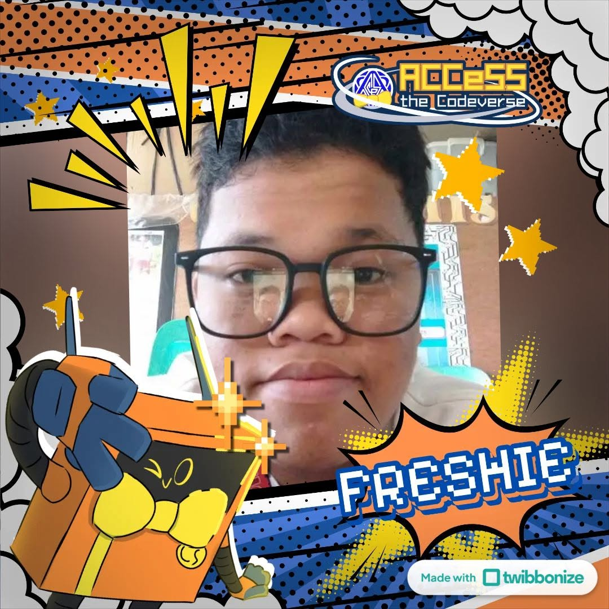

A little about me
About Me
Hello! My name is Leo Morcilla Villanueva, and I am a first-year Computer Science student at Bicol University. I have dwarfism, and throughout my life, I have experienced bullying and discrimination. Although those experiences were difficult, they taught me to become stronger and appreciate kindness, respect, and acceptance. I am thankful to have kind and supportive classmates in college who make me feel welcomed and accepted.
I chose Computer Science because I want to become a programmer someday. I want to develop my skills in coding, learn different programming languages, and gain the knowledge needed to create useful programs and applications. I know that becoming a programmer requires patience, practice, and hard work, and I am willing to face challenges and keep learning to achieve my dream.

Where it started
My Path into Computing
My interest in computing comes from living in a world where technology is used every day. I wanted to learn more than just how to use devices and websites; I wanted to understand how people create them. I chose Computer Science because it gives me the opportunity to explore programming, problem-solving, and the ideas behind technology. I know there will be challenging lessons, but I am ready to learn at my own pace, ask questions, and practice until I improve.
Outside the classroom
My Hobbies
- Watching short AI dramas
- Playing games
- Playing board games
- Exploring Canva and creative designs
Looking ahead
My Top Goals
- Graduate from college.
- Find a decent and fulfilling job.
- Become financially independent.
- Help my dad so that he only needs to stay home and get some rest.
A week of learning
My Class Schedule
My current subjects and the days and times I attend class.
| Subject | Day(s) | Time |
|---|---|---|
| Computer Programming 1 | Monday, Tuesday, Wednesday | 1:00 PM–4:00 PM; 1:00 PM–3:00 PM |
| Physics for Computing | Tuesday, Thursday | 10:30 AM–12:00 PM |
| Introduction to Computing | Monday | 9:00 AM–12:00 NN |
| Movement Competency Training | Wednesday | 7:00 AM–9:00 AM |
| Mathematical Analysis | Tuesday, Thursday, Friday | 9:00 AM–10:30 AM; 10:00 AM–12:00 PM |
| Understanding the Self | Friday | 5:00 PM–8:00 PM |
Things I enjoy
Favorites
One website I enjoy visiting is YouTube. When I feel sad, I like searching for songs that lift my mood, such as “Speechless.” Music helps me regain my happiness and relax.
What I'm building
Skills I'm Developing
- Learning the basics of programming
- Practicing problem-solving
- Creating simple web pages with HTML and CSS
- Exploring creative tools like Canva
What this project taught me
My Reflection
Making this website helped me see that I can share my experiences and interests through a simple web page. I learned how HTML organizes content into sections, headings, lists, links, and tables, while CSS controls the layout, colors, and appearance. I also improved my understanding of navigation and responsive design. I still have more to learn, but this project gave me confidence to keep practicing and exploring web development.
Sources
- MDN Web Docs — HTML
- MDN Web Docs — CSS
- YouTube — favorite website